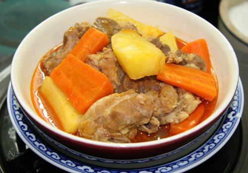

Cùng bắt tay làm thử thôi nào!
NGUYÊN LIỆU
- 1 Cái lưỡi bò
- 2 Củ cà rốt
- 1 Muỗng canh bột mì
- Bánh mì
- 50g Hành tím củ nhỏ
- 300g Khoai tây củ vừa
- 200g Cà hộp
- 100g Củ hành tây cỡ vừa
- 1 Trái chanh, ngò, vài lá thơm
- Tỏi, đường, dầu, tiêu, muối, bột ngọt
1. Chuẩn bị:
- Lưỡi bò: cạo thật kỹ bằng nước sôi cho tróc lớp da lưỡi, rửa sạch, lau khô, xắt vuông độ 5cm.
- Khoai tây: gọt vỏ, rửa sạch, để nguyên củ, hoặc chẻ đôi nếu củ to.
- Cà rốt: gọt vỏ, rửa sạch, xắt khúc độ 2 lóng tay.
- Củ hành tây: lột vỏ, nếu củ to chẻ đôi.
- Củ hành nhỏ + tỏi: lột vỏ, rửa sạch, giã nhuyễn.
2.Chế biến: Cách nấu.
- Bắc chảo dầu nóng, cho 1 ít hành tỏi bằm nhỏ vào xào cho thơm, cho khoai tây + cà rốt + củ hành tây vào xào. Gần chín vớt ra.
- Chảo dầu còn nóng cho tiếp dầu + hành tỏi bằm và cà hộp vào. Nêm 1 muỗng đường + muối + tiêu cho cà thắm đỏ. Xúc cà để riêng. Rửa sạch chảo.
- Chảo nóng, đổ dầu cào và xào hành tỏi bằm cho thơm, cho tất cả lưỡi bò +lá thơm vào xào. Thịt săn nêm tiêu + muối + bột ngọt + ½ cà hộp. Xào tiếp cho thịt thấm gia vị, sau đó đổ nước sôi ngập vào thịt. Nấu tiếp cho lưỡi bò gần mềm (lửa liu riu). Cho tiếp cà rốt, sau đó là khoai tây nấu thịt chín mềm và nước cạn còn sâm sấp thì cho vào đấy 1 muỗng bột mì đã hòa với nước lạnh cho nước được sanh sánh. Cho củ hành tây vào, nêm lại vừa ăn và cho tiếp ½ cà còn lại nồi thịt. Nhắc xuống.
3.Trình bày:
- Xắt bánh mì và sắp ra dĩa.
- Cho muối tiêu cào đĩa nhỏ + chanh xắt lát (như xắt nhanh ăn phở để khi nào ăn mới nặn chanh vào muối tiêu).
- Thịt bò múc ra dĩa sâu lòng, bên trên để vài cọng ngò cho đẹp.
- Món ăn nóng.